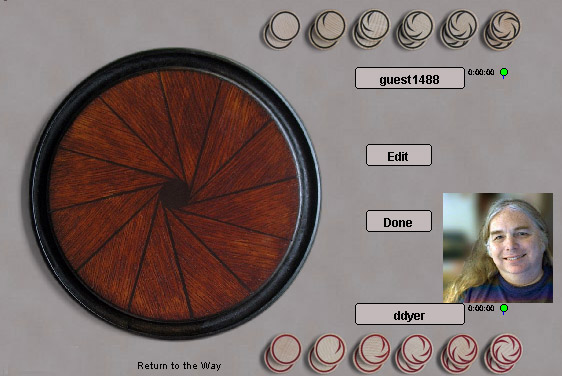

Qyshinsu
Qyshinsu est un jeu inhabituel utilisant un plateau circulaire. Le jeu s'appuie sur le principe que votre dernier coup restreint grandement les possibilités de mouvement de votre adversaire pour son prochain coup, ce qui entraîne des situations inextricables pour votre esprit.
L'éditeur a fait de ce jeu un mystère traditionnel oriental pseudo-mystique, mais ne vous y fiez pas. Il s'agit en fait d'un jeu récent, très bien pensé et qui se démarque par sa différence.
Vous pouvez lire le détail des règles, mais, en bref, les pièces (nommées pierres) sont numérotées de 1 à 5, plus le 0 intitulé « pierre ancienne ». Si le dernier coup implique la pierre numérotée N, le coup suivant doit être joué à N cases de distance autour du plateau. L'objectif est d'amener une situation ne laissant aucune possibilité de mouvement à votre adversaire.
Robots : Les robots sont vraiment balèzes, du fait de la nature étroite/profonde de l'espace de recherche.
|

|